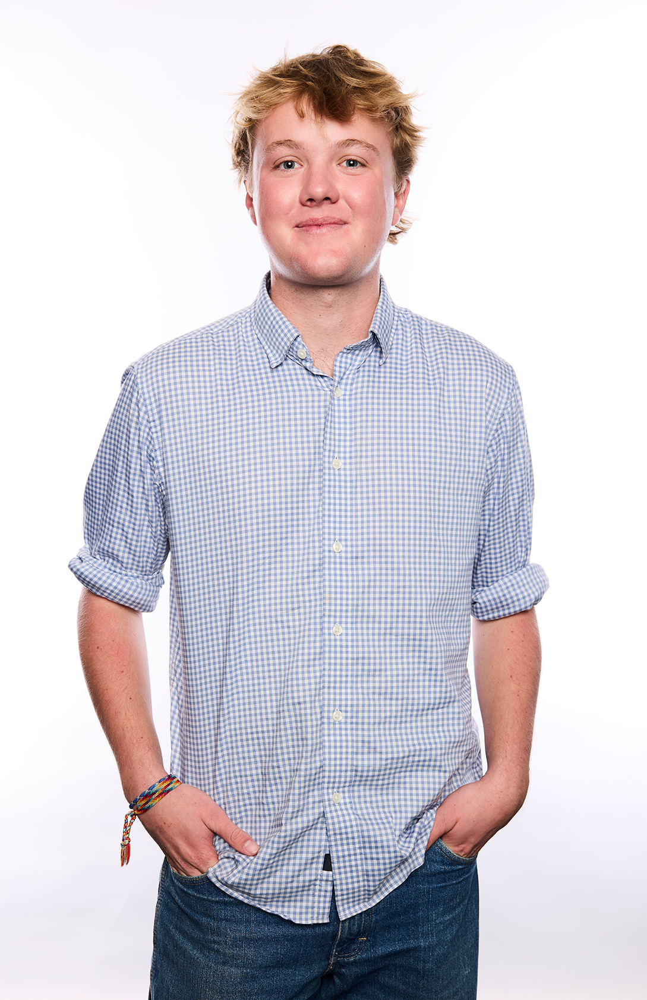

drag the pile — scroll to continue
scroll ↓

I'm a graphic designer and visual communicator who likes to build things that move — brand systems, motion graphics, and the occasional weird interactive experiment like the one you just played with above. I care about ideas that are bold, a little playful, and unmistakably intentional.